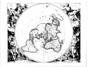

Planisphère terrestre suivant les nouvelles observations des astronomes. Dressé et presenté au Roy très chrétien par Cassini le Fils [...], J. Goeree del[ineavit], G. v[an der] Gouwen fecit. -- Planispherium terrestre [...]. [Schaal circa 1:60.000.000, azimutale projectie met de Noordpool als middelpunt.] Kopergravure, gekleurd, 540 x 660 mm, diameter 540 mm. Leide, Pierre van der Aa, [1713.] -- (COLLBN Port 143 N 57)
Op deze kaart zijn de resultaten weergegeven van een onderzoeksproject van de Académie Royale des Sciences om de juiste geografische lengte van een groot aantal steden verspreid over de gehele aardbol, te bepalen. Het gevolg daarvan was dat het wereldbeeld opnieuw een belangrijke wijziging onderging. Zowel de vorm van de continenten als hun ligging ten opzichte van elkaar werd gecorrigeerd. De eeuwenlange speurtocht van astronomen en hydrografen naar een betrouwbare methode om de juiste geografische lengte te bepalen bereikte hiermee een belangwekkend resultaat. De Parijse astronomen zwermden over de gehele wereld uit om op grond van de waarneming van de manen van Jupiter de lengten te bepalen en gedurende ongeveer een kwart eeuw werden al deze gegevens in het Parijse observatorium op een reusachtige planisfeer met een diameter van 7.80 m ingetekend. De plaatsen van waarneming zijn, zoals op de kaart vermeld staat, aangeduid met een sterretje. In 1696 verscheen bij Jean-Baptiste Nolin te Parijs de eerste verkleinde uitgave op één enkel folio-blad onder de titel Planisphère terrestre.
Kort daarna, circa 1701, zag bij François Halma te Amsterdam deze Nederlandse versie het licht, getekend door Jan Goeree en gegraveerd door G. van der Gouwe, beide leerlingen van Gerard de Lairesse (zie ook nummer 77), wiens invloed herkenbaar is in de barokke godenfiguren van de vier jaargetijden in de hoeken. Deze laten zich vergezellen door de hun toebehorende tekens van de dierenriem: ram, kreeft, weegschaal en steenbok. In de kaart zelf is door Halma slechts één wijziging aangebracht: de nulmeridiaan heeft hij vier graden naar het oosten verschoven, zodat deze over de Piek van Teneriffe op de Canarische eilanden kwam te lopen. Sinds jaren was dit al de nulmeridiaan van de Hollandse cartografen.
Na de veiling van Halma’s koperplaten in 1713 blijkt de Leidse uitgever Pieter van der Aa de nieuwe bezitter te zijn, want in hetzelfde jaar geeft deze Le nouveau theatre du monde ou la Geographie Royale uit, ‘suivant les nouvelles observations des Messrs. de l’Académie Royale des Sciences’ (Koeman Aa 6), waarin als eerste kaart deze Planisphère terrestre is opgenomen met naast de Latijnse nu ook een Franse titel en het aangepaste impressum.
Literatuur
- L.A. Brown, J.D. Cassini and his world map of 1696. Ann Arbor 1941.
- The world encompassed. An exhibition of the history of maps. Baltimore 1952, nr. 159.
- C. Koeman, Atlantes neerlandici. Bibliography of terrestrial, maritime and celestial atlases and pilot books, published in The Netherlands. Amsterdam [etc.] 1967-1986. 6 dln, dl. 1, p. 12, Aa 6.
- A la découverte de la terre. Dix siècles de cartographie. Paris 1979, nr. 118.
- G. Kish, La carte, image des civilisations. Paris 1980.
- R. Shirley, The mapping of the world. Early printed world maps, 1472-1700. London 1983, nr. 579, p. 573-575.
| vorige pagina | top pagina |